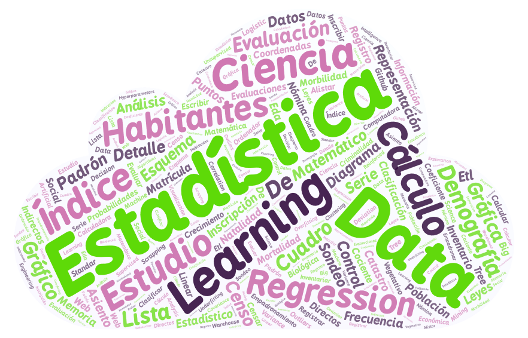
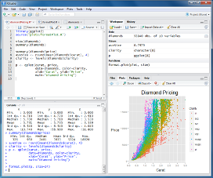

graph LR
A[Que es R]
A-->B[Herramienta de gran versatilidad]
A-->C[Gran Popularidad entre la comunidad<br/>académica y científica]
B--Que hace?-->D1>Cálculos numéricos]
B--Que hace?-->D2>Gráficas y figuras de alta calidad]
B--Que es?-->D3>Lenguaje de Programación]
B--En que campos?-->D4>Ciencia, economía, ingeniería, etc]
C--Licenciamiento?-->E1>GNU GLP: Código Abierto]
C--Ampliaciones?-->E2>Numerosas librerías]
C--Ayuda?-->E3>Comunidades, foros, tutoriales, etc]
Probabilidad Computacional y Estadística
Ingeniería de software y computación
Sitio de la asignatura Probabilidad Computacional y Estadística en la UniAutonoma del Cauca
Probabilidad Computacional y Estadística
El Profesor
Educación
Doctor en Ciencias de la Electrónica. Magister en Ingeniería Electrónica y Telecomunicaciones Ingeniero en Electrónica y Telecomunicaciones
Intereses
Biomecánica, Dispositivos para el análisis de movimiento humano, ciencia de los datos.
Desempeño
Profesor de la Facultad de Ingeniería
Invest. Línea de Percep. Avanz. y Robótica – GITA
Director Grupo de Investigación MEDES.
Contacto:
pablo.caicedo.r@uniautonoma.edu.co
Contenido del curso

- Introducción a la probabilidad y la estadística.
- Análisis exploratorio de datos.
- Modelos básicos de representación estadística.
Evaluación
- Varios 001. Quices y talleres (15%) (Lo puedo cambiar!!!)
- Parcial 002. Probabilidad, conteo y funciones de densidad de probabilidad (20%)
- Parcial 003. Análisis de datos a partir de estadística descriptiva (20%)
- Consigna 004. Proyecto Final (45%)
Recursos
Clases
Lunes, Miércoles y Viernes 9:00 – 11:00 Sala 502
Grupo Teams
Software
Interpretes: R.
IDE: Visual Studio Code, Google Colaboratory R, RStudio, PyCharm, Dataspell
Seguimiento de Aprendizaje: Moodle
Bibliografía
P. Dangeti, Statistics for Machine Learning. 2017.
A. P. Field, J. Miles, and Z. Field, Discovering statistics using R. London; Thousand Oaks, Calif.: Sage, 2012.
D. Forsyth, Probability and Statistics for Computer Science. Cham: Springer International Publishing, 2018.
C. Guisande González, A. Vaamonde Liste, and A. Barreiro Felpeto, Tratamiento de datos con R, Statistica y SPSS. 2013.
C. Heumann, M. Schomaker, and Shalabh, Introduction to Statistics and Data Analysis. Cham: Springer International Publishing, 2016.
N. S. Matloff, Probability and statistics for data science: math + R + data. Boca Raton: CRC Press, Taylor & Francis Group, 2019.
W. Menhenhall, R. Beaver, and B. Beaver, Introducción a la probabilidad y estadística. 2016.
M. R. C. Rubio, Estadística con aplicaciones en R. Bogotá: Fundacion Universidad de Bogota Jorge Tadeo Lozano, 2019.
P. Bruce, A. Bruce, y P. Gedeck, Practical Statistics for Data Scientists, Segunda Edición. Sebastopol, CA: O’Reilly, 2020.
Introducción a R
Que es R?
Un poquito de historia y herramientas
Consejo
- Creado en 1993 por Robert Gentleman y Ross Ihaka en la universidad de Auckland (Nueva Zelanda)
- En la actualidad: miles de personas en todo el mundo que colaboran en su desarrollo
- Propósito: contar con una plataforma libre y gratuita para desarrollar algoritmos numéricos y estadísticos
Consejo
Es un IDE (Entorno de Desarrollo Integrado): permite utilizar R de manera más cómoda en algunos aspectos

Otro poquito de herramientas
Google Colaboratory R
Permite escribir y ejecutar código de R en tu navegador, con
- Sin configuración requerida
- Acceso sin costo a GPU
- Facilidad para compartir
Deepnote
Similar a Google Colaboratory R, sin embargo permite el trabajo colaborativo más fácilmente. Acceso a licencia educativa con su correo electrónico de la Universidad
Instalación de R…. solo windows
Operaciones básicas
- Cursor por defecto en la consola: símbolo ““>”” indica que R está listo para recibir y ejecutar un comando.
- Comentarios: símbolo ““#””
- Operaciones matemáticas elementales: Suma(+), resta(-), división(/), multiplicación(*), potenciación(^), cociente entero(%/%), resto de la división(%%).
- Operaciones lógicas elementales: Menor que(<), Menor igual que(<=), Mayor que(>), Mayor igual que(>=), igual(==), distinto(!=).
- Funciones: conjunto de instrucciones que convierten las entradas (inputs) en resultados (outputs); pueden ser matemáticas, estadísticas, manejo de caracteres, etc. Puede construir nuevas. Algunas son:
- \(e^x\): exp(x)
- \(ln\left( x \right)\): log(x)
- \(log_{n} \left( x \right)\): log(x,n)
- \(log_{10} \left( x \right)\): log10(x)
- \(\sqrt{x}\): sqrt(x)
- \(x!\): factorial(x)
- Entero anterior a x: floor(x)
- Próximo entero de x: ceiling(x)
- Valor entero próximo a x, ubicado entre \(\left[ 0,x \right]\): trunc(x)
- Redondear el valor de x a 4 decimales: round(x, digits=4)
- Valor de x en notación científica con 3 dígitos decimales: signif(x, digits=3)
- \(cos{x}\), x en radianes: cos(x)
- \(sin{x}\), x en radianes: sin(x)
- \(tan{x}\), x en radianes: tan(x)
- \(\lvert x \rvert\): abs(x)
Tipos de datos
Consejo
Variable
- Objeto que puede cambiar de valor se crea con el operador <-
- Nombre: inicia con una letra, puede contener números, puntos
- Diferencia entre mayúsculas y minúsculas
- Después de hacer la asignación los valores pueden ser usados
Consejo
Vector
- Colección ordenada y modificable de elementos del mismo tipo
- Cada elemento tiene un índice.
- Varias formas de crearlos
- Se pueden ejecutar operaciones sobre los elementos o entre vectores
- Valores nulos : NA
Consejo
Matriz
- Vector multidimensional: filas y columnas
- Estructura con forma rectangular
- Contiene un sólo tipo de datos
Consejo
Data Frame
- Estructura de datos de dos dimensiones: puede contener datos de diferentes tipos
- Objeto más habitual para almacenar datos en R
- Las filas representan casos; las columnas representan atributos o variables
- Usada para realizar análisis de datos
Introducción a la probabilidad
Que es la probabilidad?
Incertidumbre
Toma de decisiones con información incompleta
Ejemplo
Juegos de azar. No hay forma clara para determinar un procedimiento que nos lleve a la victoria siempre.
Que es la probabilidad?
El azar no es más que la medida de la ignorancia.
Los fenómenos que consideramos al “azar” son aquellos en los que no tenemos toda la información o cuyas leyes ignoramos.
Fuentes de incertidumbre.
Datos
Debido a que nuestros instrumentos de medición tienen un margen de error, se presentan datos imperfectos e incompletos, por lo tanto hay incertidumbre en los datos.
Atributos del modelo
Atributos del modelo: Son variables que representan un subconjunto reducido de toda la realidad del problema, estas variables provienen de los datos y por lo tanto presentan cierto grado de incertidumbre.
Arquitectura del modelo
Un modelo es una representación simplificada de la realidad y al ser así, por construcción, induce otra capa de incertidumbre, ya que al ser una representación simplificada se considera mucho menos información.
Que es la probabilidad y que estudia?
- El concepto intuitivo de probabilidad indica la posibilidad de la ocurrencia de un hecho o fenómeno.
- Ejemplos:
- Tener un día soleado
- Contraer una infección
- Aprobar un examen de opción múltiple sin haber estudiado.
- La probabilidad ES una medida de la incertidumbre
Que es la probabilidad y que estudia?
Definiciones
- Un experimento aleatorio es un proceso en el que el resultado no puede ser predecido con certeza y que depende del azar.
- Un Evento aleatorio o estocástico es un subconjunto de los posibles resultados del experimento aleatorio.
- Una variable aleatoria es una función que asigna un valor a cada posible resultado de un experimento aleatorio.
Dos ejemplos fundamentales
El experimento aleatorio es lanzar un dado, la podría ser el número obtenido en el lanzamiento, que puede tomar valores de 1 a 6. El es obtener un número par, que incluiría los resultados 2, 4 y 6.
.